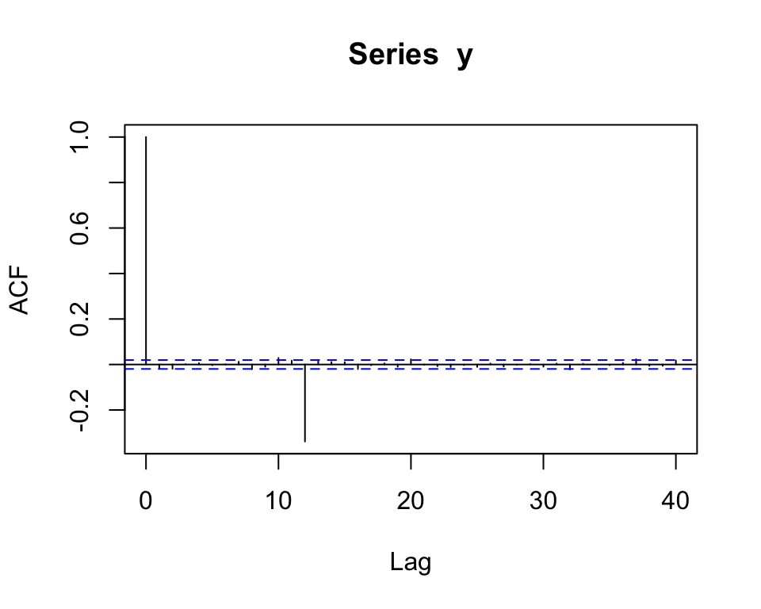
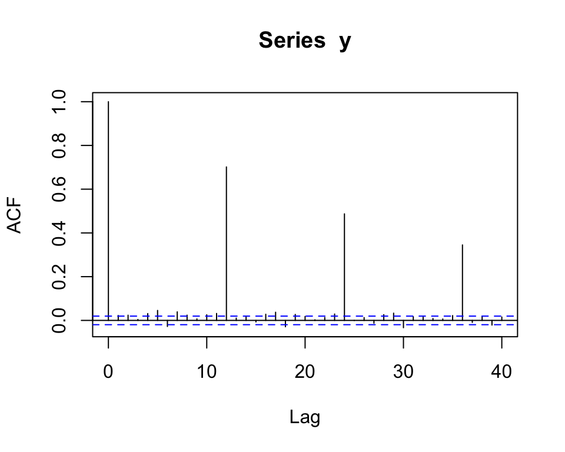
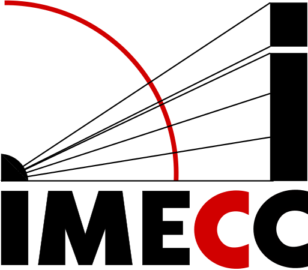

Rows: 950
Columns: 1
$ V1 <dbl> 4.587898, 4.165729, 2.003551, 1.347498, 3.484531, 3.766763, 4.62935…ME607 - Séries Temporais
Instituto de Matemática, Estatística e Computação Científica (IMECC),
Universidade Estadual de Campinas (UNICAMP).
\[Y_t = T_t + S_t + \epsilon_t\] - Métodos de decomposição - Modelos de regressão (tendência determinística + Dummy | Fourier)
ARIMA Sazonal
É possivel que, após diferenciação para remover a sazonalidade e a tendência, ainda existe correlação significativa em:
Definição:
Sejam \(d\) e \(D\) números inteiros não negativos (\(\mathbb{Z}_0^{+}\)), então \(\{y_t\}\) é um processo SARIMA \((p, d, q) \times (P, D, Q)_s\) (SARIMA com período sazonal \(s\)), se o processo \[z_t = (1 - B)^d (1 - B^s)^Dy_t\] é um processo ARMA definido por \[\phi(B) \Phi(B^s) z_t = \theta(B) \Theta(B^s) \epsilon_t, \quad \epsilon_t \sim RB(0, \sigma^2),\] em que
Observação: na prática \(D \leq 1\) e \(P, Q < 3\).
Note que o modelo SARIMA definido anteriormente pode ser reescrito como \[\phi^{\ast}(B) z_t = \theta^{\ast}(B) \epsilon_t,\]
em que:
Suponha que temos \(r\) anos de dados mensais:
| Ano Mês | Jan | Fev | Mar | … | Dez |
|---|---|---|---|---|---|
| 1 | \(y_1\) | \(y_2\) | \(y_3\) | …. | \(y_{12}\) |
| 2 | \(y_{13}\) | \(y_{14}\) | \(y_{15}\) | …. | \(y_{24}\) |
| \(\vdots\) | \(\vdots\) | \(\vdots\) | \(\vdots\) | …. | \(\vdots\) |
| r | \(y_{1 + 12(r-1)}\) | \(y_{2 + 12(r-1)}\) | \(y_{3 + 12(r-1)}\) | …. | \(y_{12 + 12(r-1)}\) |
\[\Phi(B^{12})y_t = \Theta(B^{12})U_t\]
\[\Phi(B^{12})y_t = \Theta(B^{12})U_t\]

\[\Phi(B^{12})y_t = \Theta(B^{12})U_t\]

\[\Phi(B^{12})y_t = \Theta(B^{12})U_t\]
\[\phi(B)U_t = \theta(B)\epsilon_t\]
Substituindo \(U_t\) temos
\[\Phi(B^{12})y_t = \Theta(B^{12}) \dfrac{\theta(B)}{\phi(B)}\epsilon_t\]
O que implica em
\[\phi(B) \Phi(B^{12})y_t = \Theta(B^{12}) \theta(B) \epsilon_t\]
Jan Feb Mar Apr May Jun Jul Aug Sep Oct Nov Dec
1973 9007 8106 8928 9137 10017 10826 11317 10744 9713 9938 9161 8927
1974 7750 6981 8038 8422 8714 9512 10120 9823 8743 9129 8710 8680
1975 8162 7306 8124 7870 9387 9556 10093 9620 8285 8466 8160 8034
1976 7717 7461 7767 7925 8623 8945 10078 9179 8037 8488 7874 8647
1977 7792 6957 7726 8106 8890 9299 10625 9302 8314 8850 8265 8796
1978 7836 6892 7791 8192 9115 9434 10484 9827 9110 9070 8633 9240SARIMA \((0, 1, 1) \times (0, 1, 1)_{12}\)
[1] 873.7457 868.4179 864.6874 866.6413 868.4728 863.6197 860.2355 862.2132
[9] 864.3034 859.6358 857.2329 859.3756 865.4692 860.9361 858.6464 860.8906[1] 11 p q P Q
1 0 0 0 0
2 1 0 0 0
3 0 1 0 0
4 1 1 0 0
5 0 0 1 0
6 1 0 1 0
7 0 1 1 0
8 1 1 1 0
9 0 0 0 1
10 1 0 0 1
11 0 1 0 1
12 1 1 0 1
13 0 0 1 1
14 1 0 1 1
15 0 1 1 1
16 1 1 1 1
Call:
arima(x = ts_data, order = c(0, 1, 13), seasonal = c(0, 1, 0))
Coefficients:
ma1 ma2 ma3 ma4 ma5 ma6 ma7 ma8
-0.4166 0.0947 -0.0592 -0.0707 0.2439 -0.2881 -0.0624 -0.0233
s.e. 0.1582 0.2072 0.2264 0.2523 0.2284 0.2367 0.1660 0.2157
ma9 ma10 ma11 ma12 ma13
0.0514 0.1455 0.0458 -0.6686 0.3867
s.e. 0.2193 0.2428 0.2182 0.2289 0.2123
sigma^2 estimated as 79206: log likelihood = -421.76, aic = 871.52. . .
Call:
arima(x = ts_data, order = c(0, 1, 13), seasonal = c(0, 1, 0), fixed = c(NA,
0, 0, 0, NA, NA, 0, 0, 0, 0, 0, NA, NA))
Coefficients:
ma1 ma2 ma3 ma4 ma5 ma6 ma7 ma8 ma9 ma10 ma11
-0.5018 0 0 0 0.2604 -0.2209 0 0 0 0 0
s.e. 0.2074 0 0 0 0.1703 0.1890 0 0 0 0 0
ma12 ma13
-0.9289 0.2032
s.e. 0.2492 0.1830
sigma^2 estimated as 66822: log likelihood = -422.64, aic = 857.27
Call:
arima(x = ts_data, order = c(0, 1, 13), seasonal = c(0, 1, 0), fixed = c(NA,
0, 0, 0, 0, 0, 0, 0, 0, 0, 0, NA, NA))
Coefficients:
ma1 ma2 ma3 ma4 ma5 ma6 ma7 ma8 ma9 ma10 ma11 ma12
-0.5180 0 0 0 0 0 0 0 0 0 0 -0.8833
s.e. 0.2235 0 0 0 0 0 0 0 0 0 0 0.3295
ma13
0.1323
s.e. 0.2018
sigma^2 estimated as 75607: log likelihood = -424.92, aic = 857.83[1] 857.2329 878.8892 864.6387 865.2017Seja \(k\) o número de parâmetros estimados e \(n\) o tamanho da série:
\[AIC = -2 \log(\underbrace{\text{máxima verossimilhança}}_{L}) + 2k\]
\[\log L = -\frac{n}{2} \log (2 \pi \sigma^2_{\epsilon}) - \dfrac{1}{2\sigma^2_{\epsilon}} S(\boldsymbol{\Theta}, y)\]
Maximizando, obtemos \(\hat{\boldsymbol{\Theta}}\) e então \(\log \hat{L}\),
\[\log \hat{L} = \underbrace{-\frac{n}{2} \log (2 \pi \hat{\sigma}^2_{\epsilon})}_{-\dfrac{n}{2} \log(2\pi) - \dfrac{n}{2} \log (\hat{\sigma}^2_{\epsilon})} - \underbrace{\dfrac{1}{2\hat{\sigma}^2_{\epsilon}} n \hat{\sigma}^2_{\epsilon}}_{\dfrac{n}{2}}\]
| Critério | Fórmula | Penalização | Objetivo / Comentário |
|---|---|---|---|
| AIC | ( = -2 L + 2k ) | Linear | Equilíbrio entre ajuste e complexidade |
| AICc | ( = + ) | Corrige o AIC | Corrige o AIC para amostras pequenas |
| BIC (Schwarz) | ( = -2 L + k n ) | Logarítmica | Favorece modelos mais simples |
| HQ (Hannan-Quinn) | ( = -2 L + 2k (n) ) | Intermediária | Penalização entre AIC e BIC |
| Shibata (SBC) | Semelhante ao AIC, recomendado para previsão | Similar ao AIC | Melhor desempenho preditivo em alguns contextos |

Carlos Trucíos (IMECC/UNICAMP) | ME607 - Séries Temporais | ctruciosm.github.io